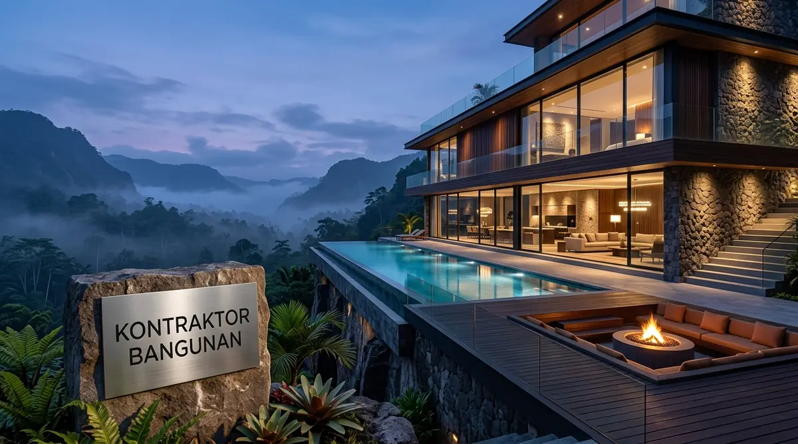

Mengapa Memilih Kontraktor Gedung Malang dengan Kualifikasi LPJK?
Kontraktor tersertifikasi menjamin penerapan manajemen K3 proyek ketat, ketersediaan alat berat modern, dan transparansi laporan mutu beton ReadyMix bersertifikat.
Membangun gedung bertingkat memiliki kompleksitas resiko struktural dan keselamatan kerja yang sangat tinggi. Berdasarkan data Lembaga Pengembangan Jasa Konstruksi (LPJK 2025/2026), ketiadaan pengujian mutu beton berkala dan rekayasa pondasi dalam pada proyek gedung di Malang Raya menjadi pemicu utama terjadinya lendutan balok (deflection) dan retak geser dinding.
Keunggulan utama bermitra bersama Kontraktor Bangunan:
- Tenaga Ahli Bersertifikat SKA/SKK: Proyek dipimpin oleh Project Manager, Site Engineer, dan Ahli K3 Konstruksi bersertifikat resmi Kementerian PUPR.
- Ketersediaan Armada Alat Konstruksi: Didukung tower crane, mobile crane, concrete pump, perancah scaffolding bersertifikat, dan bekisting sistem baja.
- Pengujian Laboratorium Independen: Uji tekan silinder beton (slump test & compression test) dan uji tarik baja tulangan dilakukan di laboratorium teknik terakreditasi.
Bagaimana Tahapan Manajemen Pembangunan Gedung Bertingkat di Malang?
Tahapan mencakup penyelidikan geoteknik sondir-boring dalam, perancangan DED struktur & MEP, pekerjaan substructure pondasi bored pile, hingga superstructure dan commissioning.
Kami menerapkan tahapan konstruksi sistematis berstandar ISO:
1. Uji Geoteknik Lapangan (Soil Investigation)
Pelaksanaan uji Cone Penetration Test (CPT/Sondir) dan pengeboran inti (Deep Boring) hingga kedalaman 20-30 meter untuk mengetahui strata tanah keras.
2. Pekerjaan Struktur Bawah (Substructure)
Pengeboran pondasi Bored Pile / Strauss Pile diameter besar, pemotongan tiang, pembesian Pile Cap, serta pengecoran balok Tie Beam pengikat antar kolom.
3. Pekerjaan Struktur Atas (Superstructure)
Pengerjaan kolom komposit beton bertulang mutu K-350/K-400, balok transfer, dan plat lantai bondek sistem monolitik per lantai menggunakan concrete pump.
4. Pekerjaan Arsitektur & Fasad Eksterior
Pemasangan dinding bata ringan, plester-aci, tirai kaca curtain wall tempered, panel ACP, dan kusen aluminium profil komersial.
5. Pekerjaan MEP & Sertifikasi SLF
Instalasi lift penumpang, sistem tata udara (VRV/Chiller), genset darurat, proteksi kebakaran pipa hidran sprinkler otomatis, dan pengurusan Sertifikat Laik Fungsi (SLF).

Proses pengecoran plat lantai bertingkat menggunakan concrete pump dan bekisting presisi di Malang.
Tabel Komparasi Sistem Struktur Gedung Bertingkat di Malang
Tabel komparasi menyajikan perbandingan teknis antara Struktur Beton Bertulang Konvensional, Struktur Komposit Baja-Beton, dan Sistem Precast Cetak.
| Parameter Evaluasi | Beton Bertulang Konvensional (RC) | Komposit Baja WF + Plat Bondek | Precast Concrete (Beton Pracetak) |
|---|---|---|---|
| Estimasi Biaya / m² | Rp4.200.000 – Rp5.800.000 | Rp4.800.000 – Rp6.800.000 | Rp4.500.000 – Rp6.200.000 |
| Kecepatan Konstruksi | Standar (Menunggu Umur Cor) | Sangat Cepat (Ereksi Rangka) | Sangat Cepat (Pemasangan Panel) |
| Kinerja Terhadap Gempa | Sangat Baik (Monolitik Daktail) | Unggul (Fleksibilitas Tinggi) | Baik (Kritis pada Sambungan Grout) |
| Fleksibilitas Arsitektur | Sangat Tinggi (Bebas Modifikasi) | Tinggi | Sedang (Terikat Modul Cetakan) |
| Kebutuhan Area Proyek | Luas untuk Perakitan Besi | Sedang | Memerlukan Akses Manuver Truk Crane |
| Kesesuaian di Malang | Gedung Kampus, Kantor 3-5 Lt | Gedung Hotel, Mall, Ruko 4-8 Lt | Gedung Asrama, Rusunawa, RS |
- Gunakan Grid Kolom Modular (Ukuran 6x6 m atau 8x8 m): Grid modular meminimalkan variasi dimensi balok dan pemotongan besi tulangan, sehingga menghemat biaya material struktur hingga 15%.
- Rancang Tangga Darurat Tahan Api: Pastikan tangga evakuasi darurat dilengkapi dinding beton bertulang masif (shear wall) dan pintu tahan api (fire rated door) dengan tekanan udara positif.
- Terapkan Sistem Pemanen Air Hujan (Rainwater Harvesting): Memanfaatkan curah hujan Malang yang tinggi untuk menyuplai air bilas toilet dan penyiraman lanskap gedung guna menurunkan biaya operasional air bersih.
Pertanyaan yang Sering Diajukan (FAQ)
Kesimpulan Praktis
Membangun gedung bertingkat yang kokoh, megah, dan bernilai investasi tinggi menuntut keahlian rekayasa struktur tahan gempa dan manajemen proyek yang profesional. Hubungi kami untuk tender atau pengadaan proyek gedung.